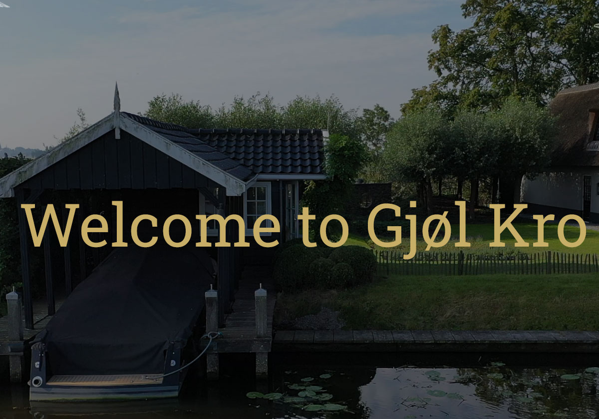
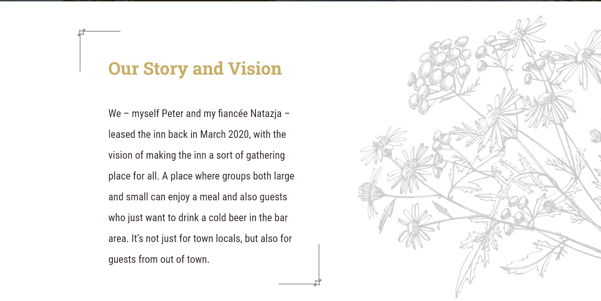
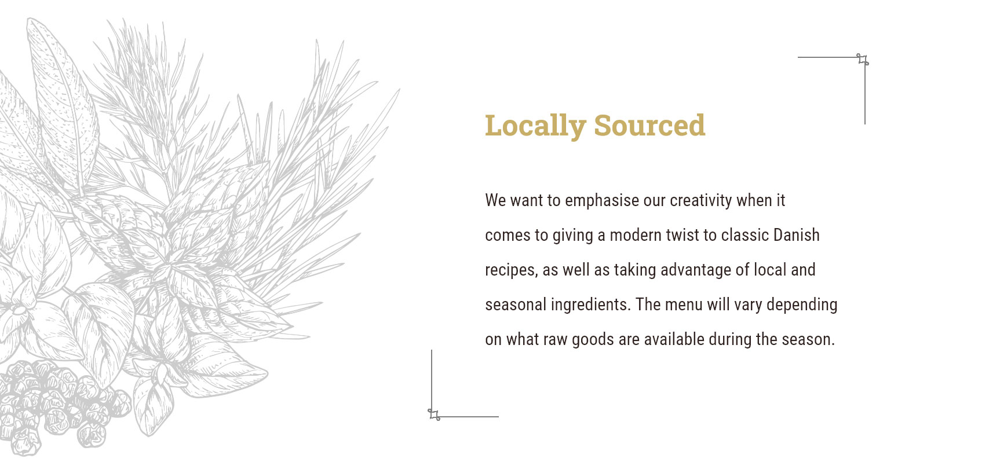
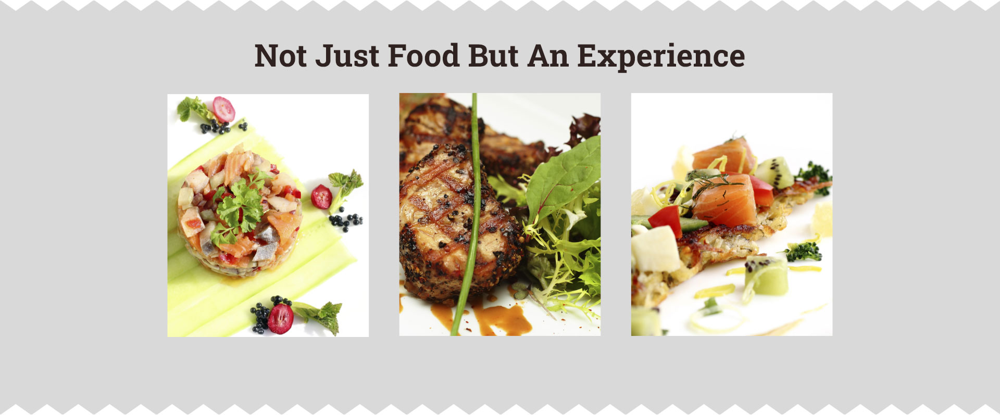
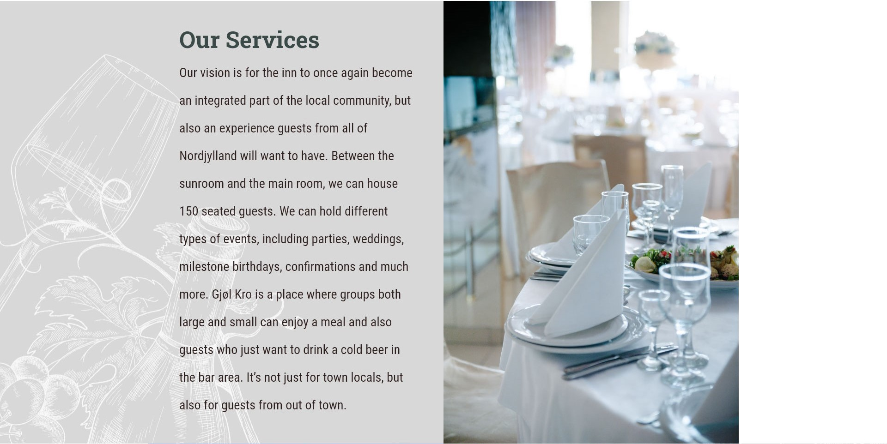
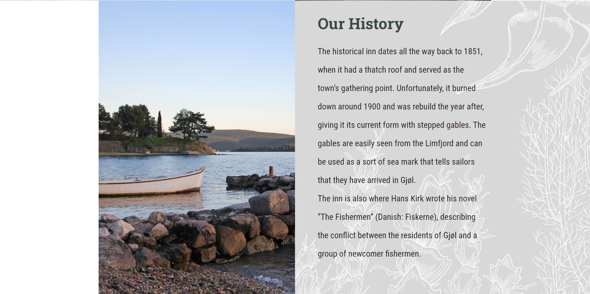
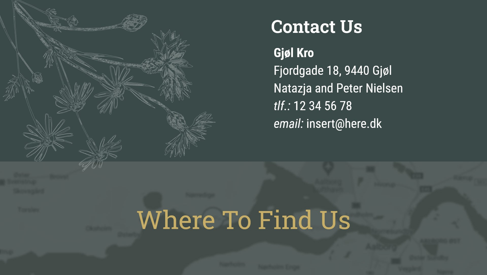

Gjøl Kro
Website
Gjøl Kro
Website
Gjøl Kro
Website
Year
Category
Used Tools
2022
Research
Web Design
Front-end Development
Information Architecture
CSS
Figma
HTML5
GitHub
AdobeXD
Role
Purpose
Research Conduction
Front-end development
University Project
The website was made as a group university project focused on product development for the client - Gjol Kro. It contained tasks such as qualitative and quantitative research conduction, prototyping, creating functional mobile and desktop version, terminated with product testing. Website was created in order to provide better channel of communication with customers and had to combine owners requirements and user needs. Creative brief prepared by the client was supplied at beginning and was a base for further development.
Final design was focused on creating a bond with the users and aimed to encourage them to contact the owners, whom desired to keep close contact with their guests. Research phase revealed the uniqueness of the building inn is located at and pointed out the importance of historical values that are associated with place. With that known sketching phase begun and the first step was structuring the navigation. Afterwards, when the hierarchy was organised, wireframes of mobile and desktop version were made and the website theme was chosen based on color palette supplied by the client.
01. Website navigation structure breakdown
02. Mobile and desktop version wire frames
03. Color palette adaptation for final design
04. Desktop version design of main page with video in background
05. Main page section with owners story
06. Main page section with owners vision and approach towards traditional cuisine
07. Owners guiding idea
08. Offered services
09. Historical values of the inn
09. Contact info and directions